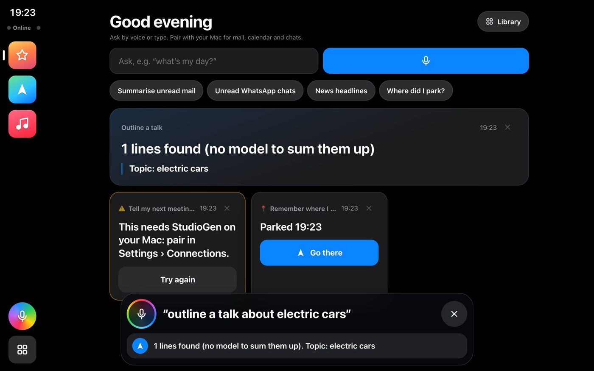
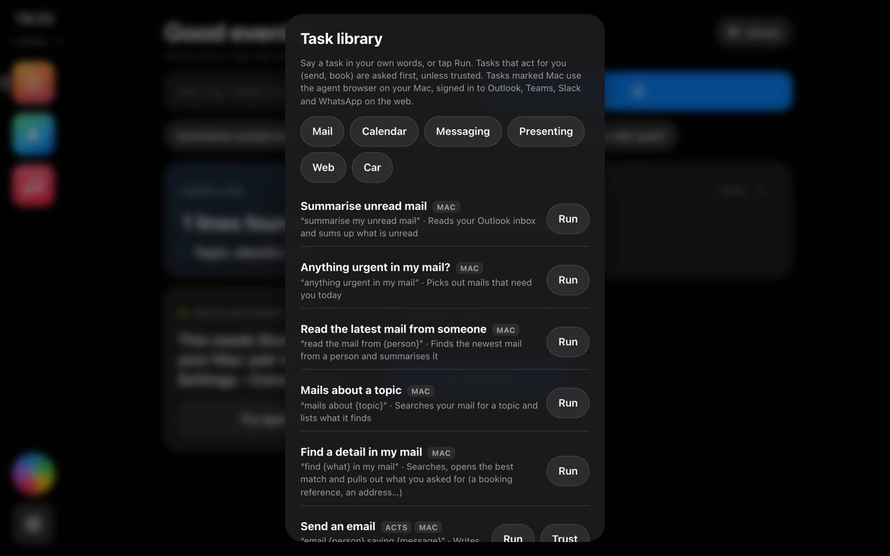

DriveGen & StudioGen guide
How to use the two apps: DriveGen on your phone (an agent in the car) and StudioGen on your Mac (presenting, the desktop agent and the hub for your devices).
What the apps are
DriveGen (phone, iPad, any browser)
A car screen in the style of CarPlay: maps and turn-by-turn, a dashboard of dials and widgets, calls, messages, music and radio, all by voice. Its Agent screen is your home for results: ask for your mail, your day or a message, and the answer shows big and simple, read aloud. Mail, calendar and chat tasks are done by your Mac.
StudioGen (Mac app)
The same app on the Mac, plus what only a computer can do: a 3D assistant that presents your slides with you, scripts that drive web pages and apps, a browser that stays signed in to Outlook, Teams, Slack and WhatsApp, Apple’s on-device model, and the Mesh, which links all your Macs and phones.
They work alone, and better together: once your phone is paired with your Mac, what you ask in the car can be done on the Mac and the answer comes back to the phone.
Install and set up
DriveGen on an iPhone or iPad
- Open https://vchahalibm.github.io/CarPWA/ in Safari.
- Tap Share › Add to Home Screen, keep Open as Web App on, and open DriveGen from the Home Screen (it then runs full screen, without browser bars).
- On first launch, tap to allow location (needed for maps and speed). The first time you tap the mic, allow the microphone.
StudioGen on a Mac
- Download the latest StudioGen DMG (Apple silicon or Intel) and drag it to Applications.
- The app isn’t notarised by Apple, so the first time either right-click it and choose Open, or run xattr -cr /Applications/StudioGen.app in Terminal once.
- macOS asks once each for the microphone, the camera and speech recognition when you first use them.
- StudioGen updates itself: when new files are ready a bar offers Restart now. You can also use StudioGen menu › Check for updates….
The language model (understanding what you say, result cards, building tasks): at the first start StudioGen checks the Mac’s memory and offers the model that fits (gpt-oss 20B from 16 GB, gpt-oss 120B from 80 GB), built into StudioGen: nothing else to install; if Ollama already has the model StudioGen reads that copy, otherwise it downloads it once (about 12 GB, carrying on where it stopped if interrupted). Ollama or another model server can still be chosen; on a StudioGen without the built-in engine, Install Ollama and the model does both: StudioGen downloads Ollama from ollama.com into your Applications folder (you allow it once), starts it, and downloads the model with a progress bar. It runs on the Mac, so nothing leaves it. With less memory, or for a bigger model, it suggests pooling with another Mac, or Claude with your key. DriveGen and StudioGen Workers use the Mac’s model. Change it in Settings › Assistant › Language model; read and change what it’s told in Settings › Assistant › Prompts.
The setup screen
The first time you open either app, the agent sets it up in front of you: it checks the device, downloads the natural voice (about 40 MB on most phones, once) and times it, picks your voice, and shows how listening, the camera, the 3D assistant and the start screen are set, each with where to change it in Settings. Tap Start when you like; downloads carry on. After an update, the same screen shows what's new.
Pair your phone with your Mac
Do this once; afterwards they find each other by themselves, at home, at work and in the car on mobile data.
- On the Mac: StudioGen › Settings › Connections › Pair a phone or iPad (once). Optionally type a secret phrase of your own. A code appears.
- On the phone: DriveGen › Settings › Connections › Pair once and scan the code (or paste it with No camera? Paste the code). Type the same phrase if you set one.
- The corner of the dock shows the connection: Direct, Relay, Tailscale, Waiting or Offline.

Messages are end-to-end encrypted. They travel through public relays (which only see noise) and switch to a direct link between the devices whenever the networks allow. More in Connections.
Getting around
- The dock (left in landscape, bottom in portrait): the clock, the connection, your three latest apps, the mic and the Home button (the grid of apps).
- Agent (the star): the results of what you ask. It’s first on DriveGen’s home grid; StudioGen has it too.
- Start page (StudioGen): the assistant, what the app does and cards to start presenting, open scripts, the Mesh or Connections. Drag the window by the strip along the top. The ⚙ top right changes the character and its size; drag the character to move it. The handle on the left slides the dock in.
- Dashboard: dials, a map or pages of widgets (see the dashboard).
- Settings: tabs along the top (swipe them sideways on a phone). Choose what opens first in Settings › Start screen: Start page, Agent or Dashboard.

Talking to it
Tap the mic and speak, or type in the Agent screen’s box (not while driving). It answers aloud and shows the reply in the listening strip.
- Commands: about a hundred, from
take me home
tonext slide
. All are listed, switchable and editable in Settings › Voice › Voice commands, where you can also add your own: what you say (with{words}to catch), and what happens (an action, an app, a shortcut, a reply). - By meaning: if nothing matches, the language model on the Mac works out what you meant (
is it going to pour later?
gives the weather). Phones ask their Mac. Settings › Voice › Understand commands by meaning. - “Did you mean…?”: when it’s unsure it asks; say
yes
orno
. - Conversation mode (Settings › Voice): tap once and keep talking; you can interrupt it. Say
that’s all
to finish. - The reply voice: Automatic uses the natural voice, Phonon, on the device (fast on phones, tablets and Macs), or the device’s own voice where Phonon can’t keep up or for languages other than English. Choose female or male, or any of Phonon’s 25 English voices by name in Settings › Voice › Natural voice; Check the voices times them. Kokoro, the earlier voice, is an optional download there.
- Keep speech on this device: speech is never sent to Apple’s or Google’s servers; recognition runs on the device instead.
The agent: tasks for you
On a Mac (or any wide screen) the assistant stands on the left of the Agent screen, beside your cards; while a task is watched, the watch panel takes the right and the cards stay between them.
Ask for a task in your own words and the agent does it, most often on your Mac, and shows the result as a card. Tasks that send, book or post always ask first. The newest results are cards; everything older (tasks and scripts that ran) goes on the timeline below them: tap one to hear it again, ▶ to run it again. If your Mac is offline, the request waits (🕓 on the card) and runs when it's back: 10 minutes by default, per kind in Agent › Library › Settings › Waiting requests.

What you can ask (first set)
| Area | For example |
|---|---|
| Mail (Outlook on the web) | summarise my unread mail· anything urgent in my mail?· read the mail from Priya· mails about the Acme deal· find my PNR in my mail· email Rahul saying the deck is ready· reply to Priya saying I’ll call at five |
| Calendar (Outlook on the web) | what’s my day?· what’s my day on 2nd Nov?· my meetings tomorrow· when is my next meeting?· brief me for my next meeting· add team lunch to my calendar tomorrow at one· I’m running ten minutes late |
| Messaging (web) | any Teams messages?· what did Priya say on Teams?· tell Priya on Teams I’m on my way· any Slack mentions?· post in sales on Slack the numbers are out· any WhatsApp messages?· WhatsApp Mom saying I’m on my way |
| Presenting | present the keynote· outline a talk about electric cars· what can I present? |
| Web | flight status of AI 101· news about electric cars· look up the population of Pune· price of a MacBook Air |
| Car | commute brief· remember where I parked· where did I park?· navigate to my next meeting· when do I arrive?· WhatsApp Mom my ETA· take a note: call the bank |
Set up once on the Mac
- Agent › Library › Agent browser (sign in): sign in to Outlook, Teams and Slack, and link WhatsApp Web with your phone. The browser keeps you signed in; close it with Done. If a task finds a sign-in page later, its card says so and opens the browser.
- Agent › Library › Settings: choose work or school Outlook (outlook.office.com) or personal (outlook.live.com).
- Agent › Library › People: names you say, with an email (mail and Teams) and a WhatsApp number (with the country code).
While it works, it says a short line at once (On it. Give me a second.
) and the assistant types, then thinks, hand on chin; it answers with a gesture. In Drive mode only its face changes.
Asking before acting
For anything that acts for you, the agent says Shall I email Rahul: “the deck is ready”?
and shows Yes, Yes, always and No. Yes, always trusts that task from then on; take it back with Ask first in the Library.
In the car
While you drive, cards show at most three short lines and are read aloud; tap a card to hear it again, or Go there on a card with a place. Missing details are asked for (From whom?
). Mail, calendar and chat tasks run on your paired Mac, so it needs to be awake with StudioGen open.
Your own tasks
Agent › Library › + New task: give it a name and the ways you’d ask (one per line; words in braces become details it fills in, e.g. check order {order}). Then what it does:
- Read a web page and answer: a web address (it can use your details, e.g.
https://shop.example/orders/{order}) and what to tell you. On the Mac it can use your signed-in sites. - Run tasks in order (a composite): pick tasks; each result shows as its own card.
Run my Monday
could be your day, urgent mail and the weekly script. - Run one of my scripts, or steps as JSON for anything else.

Answers are read aloud as the headline and up to five items (three while driving), each as who and the gist, then how many more are on the card. Going to another screen lets the reply finish; ✕ or Escape stops it.
Sign-ins and containers
Tasks that use web pages run in the agent browser on your Mac. Sign in there once per site (a task that finds a sign-in page stops and opens it for you); sign-ins are kept when StudioGen restarts or updates. Agent › Library › Settings › Containers and sign-ins works like Firefox containers: each container (Default, Work, Personal, or your own) keeps its own sign-ins, so a work and a personal account of the same site can both stay signed in. Put sites in a container (one a line, outlook.office.com); Sign in… opens the container on its first site; Forget sign-ins signs out of everything in it. A task can also name its container in the editor.
Make and fix tasks
Settings › Scripts & tasks › Agent tasks lists every task with ▶ (run it and watch), Edit and, for your own, Delete. The editor has the name, the ways you ask (words in {braces} become inputs, with the question asked when one is missing), whether it acts for you, whether it runs on your Mac and whether it is shared in your mesh, and the steps as cards (open a page, wait, click, type, press a key, read part of the page, make the answer card, run another task, pause, stop, say). Teach me opens the agent browser: do the task once, clicking and typing as you would; tap Read this part on what the agent should read, then Done; it asks what to tell you and which words you typed change each time. Test (watch) first asks for the inputs’ values in a form (filled with the test values you keep beside each input in the editor, changed there or in the form), then runs it in the side panel so you see each step; ▶ in the list does the same. Editing a built-in task makes your own copy; Reset brings the original back.
Build tasks by describing them
On Stage, say help me build a task
: the assistant asks a few questions (answer by voice, person is Priya
, or type in the card beside it), reads out the plan, checks it on the real pages and runs it for you; say save it
. Choose the AI that writes it (Claude, a command-line AI such as Claude Code, an open-weight model in Ollama, IBM Bob, or the Mac's own model) in Settings › Scripts & tasks › Build with an LLM, where Build a task does the same by typing. Or Copy the prompt into Claude (or another LLM), answer its few questions (person is Priya Nair
), paste its JSON back and Import; Check it now tries each step on the real pages without sending anything, and Show me fixes a step by pointing at the right thing. On a Mac you can also type what the task should do and press Plan it: Apple's on-device model builds it from tasks that already work. To try things safely, tick Agent › Library › Settings › Use the practice sites (a made-up inbox, Slack and WhatsApp). Details: the guide.
Something not working? Settings › System › Debug log: turn it on with the key you were given, repeat the problem, then send the log from Settings › Logs (Share or Copy). It never records keys or passwords.
In the car
- Navigate:
navigate to the airport
,take me home
, or search in Maps. Turn-by-turn prompts, speed limits, rerouting. Tap ☆ on a place to save it as Home or Work. - Views: Map, 3D, AR (the route on the camera view) and HUD (big arrow; Mirror for a windscreen reflection). Say
AR mode
or use the mode button. - Nearby:
find parking
,find a charger
, fuel, coffee, food. - Calls and messages: add your contacts in Settings › Phone & apps › Contacts;
call Ravi
,text Ravi saying running late
. Messages are read aloud and hidden while moving. - Music and radio:
play Radio Mirchi
,play Believer on Spotify
. Radio pauses while you talk to the assistant. - Camera: the Camera widget recognises people, cars, bikes, animals and signals on the device; optional spoken alerts;
what do you see?
. - Hide while driving keeps distracting screens away above walking speed; in Drive mode the assistant only changes its face, no arm movements.

The dashboard and widgets
- Three layouts (swipe or use the pill): Cluster (eight dial styles), Map, and Widgets (pages of widgets).
- Edit: add, remove, reorder and resize widgets with the corner handle; add pages; stack widgets beside or inside the cluster. The camera and 3D widgets can float over the rest.
- Widgets: speed, trip, route, next turn, weather, calendar, clock, now playing, compass, roll, pitch, elevation, G-force, radio, the Assistant (your conversation by day), camera, data (table and chart), and documents, videos, web pages and 3D models (each as many times as you like; tap ⚙ in Edit).
- Documents: PDF and PowerPoint (with speaker notes), Word/Excel/SharePoint by link.
next slide
,go to slide 5
. - Customise (sliders button): dial style, accent colour, sensors. Dark and light themes, wallpapers.
- Widget links (Settings › Dashboard › Widget links): when something happens, do something (e.g. when I arrive at the office, stop the radio).

Stage and the assistant (presenting)
Settings › Mode › Stage (or say stage mode
): your content large on the left, the 3D assistant and any widgets on the right, captions along the bottom. A clicker or the arrow keys turn slides.
- The assistant talks with lip-sync, blinks, looks at you and gestures (about 45 motions: wave, point, present, explain, think, typing, thumbs up…). Choose the character in Settings › Assistant › Avatars (Elle, Vita, Victoria, Kiko, Noir, Ren, Seed-san, Maya, Leo, or your own .vrm).
- Capture a motion (Settings › Scripts › Assistant motions): stand in front of the camera and the assistant copies you; record a few seconds and it joins the motion library.
- Follow the presenter: whoever shows the claim gesture (open palm, then fist) becomes the presenter; the assistant looks at them and takes their hand gestures. Point and pinch to click.
- Gesture to start listening (Settings › Stage › Gesture to start listening): the presenter holds it (point up ☝, 🤟, ✌, 👍 or 👎) and the microphone opens as if they tapped it, cutting off a reply that’s playing; the same gesture again closes it. No conversation mode needed.
- Presenter view: a second window with notes, what’s next, a timer and big controls. Present on (menu bar) puts StudioGen full screen on the TV and the presenter view on your screen; Esc ends it.

Cards while presenting
On Stage, anything a command opens (the weather, messages, music, a map, “what can I say”, an agent result) appears as a card over your slides, so the presentation, the assistant and the camera carry on. Say close card
or tap ✕; the card also closes when the script moves on. Private things (messages, calls, calendar, mail and chat results) appear only if Settings › Stage › Show private things on screen is on; otherwise the answer is only spoken. In DriveGen the same cards appear while you’re on the Agent home screen; elsewhere screens switch as before.
Scripts
Step by step, with every step and recipes for harder cases: the scripts and tasks guide.
A script has the assistant lead a presentation or a demo, step by step. They live in Settings › Scripts, the same place as always.
- New script opens the editor: a timeline of steps, each with Show (what happens on screen: slides, pages, widgets, actions), Say (the assistant’s line, face and motion;
{notes}reads the slide’s speaker notes) and Next (clicker, a phrase like “next”, a hand gesture, a pause, an app event, or a jump). New steps come from a three-question wizard. - Record a new script: use the app as you will in the demo; your clicks, typing and drags become the steps, replayed with a gliding pointer.
- Record web steps: clicks and typing on a web page, replayed on cue. Passwords, card numbers and one-time codes are never recorded.
- Interactive scripts: no timeline; the assistant listens and does what you ask from its list, until you say you’re done.
- Logic: remember values, if/else, repeat, for each, and background jobs that report when done.
- While a script runs:
next
,go back
,back two steps
,start over
,stop the demo
, or tap the step dots. - Sharing: ⬇ exports a bundle with everything the script uses; Import and Library bring them in.

Tasks, data and web pages on the Mac
- Tasks on this computer: script steps can run AppleScript, a Shortcut or a shell command (open an app, notify, draft an email, battery and disk…). Each piece of code shows itself and asks once before it runs; Settings › System › Tasks you always allow.
- Data: the data widget shows a CSV/Excel export or JSON as a table and a chart; scripts load, chart and summarise it.
- Web page widgets are real browsers on the Mac: any site, signed in, with back and forward. Site helpers add your own CSS/JS to chosen sites (for example to hide cookie banners before a demo).
Connections
Settings › Connections on both apps.
- Pair once (above): from anywhere, no account. Encrypted messages through public relays, a direct link when the networks allow.
- Connect directly: same Wi-Fi or the Mac on the phone’s hotspot, codes shown both ways, nothing in between.
- Tailscale: if you already use it.
- Secret phrase: an extra secret typed on both devices; Change secret now or on a schedule; Revoke a device on the Mac.
- Test the connection: this network, every relay, the other app, a verdict. Say
test the connection
. - From the phone:
run the sales summary on my Mac
runs a script the Mac offers (tick them in Connections), and the answer comes back to the phone.
The Mesh and shows
Several StudioGens and DriveGens as one team (StudioGen › Mesh).
- Create a mesh, then Invite (a code or QR); paired phones join by themselves.
- Live: who is connected to whom and how, what each is running. Devices: roles and permissions. Activity and History (a week, with replay and export).
- Shows: one script across screens, in steps (every screen moves together) or in tandem (each runs its own part, waiting for your cues). From the phone:
start the keynote on all screens
,next on every screen
,stop the show
. A small badge shows on every screen while a show runs. - Shared: scripts and motions from the mesh; mark yours private if they shouldn’t be shared.
- Your sign-ins stay yours: tasks that use your mail, chats, calendar or Mac (anything you sign in to) run on your StudioGen only for your own devices: those paired with it, and those you tick Yours in Mesh › Devices (kept on that Mac, so no mesh owner can change it). Shared tasks that need no sign-in, such as a web search, anyone in the mesh can run there by just asking (
title of the mesh page
); untick shared tasks for a device to stop it. - From afar: on your phone, a task card that stopped at a sign-in has Sign in from here: the Mac's agent browser shows live, you tap and type, then ask again (same network). Mesh › See its screen does the same for the whole StudioGen; that's how a StudioGen Worker (StudioGen in Docker,
worker/README.md) is set up and signed in. - Workers (Mesh › Workers): more StudioGens of yours that run by themselves, with their own sign-ins (a second WhatsApp, a work account) and tasks running side by side, all using the Mac’s language model. + New Worker: in OrbStack (StudioGen installs it if needed; free for personal use), light on this Mac (nothing to install), or on another machine (a command to paste). Sign in to one with Sign in from here; Stop, Start, Update, Remove from the same list.
- StudioGBee (optional): an always-on place your team runs (one Docker command,
bee/README.md). Add it in Settings › Connections › StudioGBee; then a request for a Mac that is offline waits there and the answer arrives even if you closed the app; on DriveGen tap Notify me when an answer is ready (from the Home Screen app). StudioGens back up their tasks and scripts there. Mesh owners see the activity on its dashboard (Dashboard code, then a passkey). It only ever sees sealed messages.

Settings at a glance
Settings has six tabs (swipe them sideways on a phone). The guide names the group inside a tab, e.g. Settings › Voice is the Voice group on the Assistant tab.
| Tab | Groups and what’s there |
|---|---|
| Assistant | Assistant: language model (this Mac’s, your Mac’s, or Claude; each job on its own), prompts (read and change them), avatars, the start-page greeting · Voice: speech recognition, keep speech on this device, reply voice (Automatic, device, natural), check the voices, voice commands, conversation mode, understand commands by meaning, act after you stop talking |
| Stage | Mode (Drive or Stage) · Presenting: captions, presenter view, follow the presenter, claim gesture, point to click · Cameras: which camera per mode |
| Drive | Dashboard (widget links, radio stations) · Driving (hide while driving) · Navigation (routing, TomTom key, Home and Work) · Phone & apps (contacts, music app, shortcuts) · Camera & objects (recognition model, alerts) · Location. On StudioGen this tab shows when you turn on the drive settings. |
| Scripts & tasks | Scripts, assistant motions, recordings, site helpers, screen understanding, the library address |
| Connections | Pairing, relays, direct link, test the connection, secrets, devices |
| System | Display (start screen, theme, wallpaper, units, seamless widgets) · System (updates, start at login, tasks you always allow, download everything for offline use) |
Privacy and safety
- Recognition, the reply voice, the camera’s recognition and Apple’s model all run on your devices. Speech goes to Apple’s or Google’s servers only for languages that can’t be recognised on the device, and never with Keep speech on this device.
- Messages between your devices are end-to-end encrypted; relays only pass on noise.
- Sign-ins in the agent browser and web widgets stay on your Mac. Passwords, card numbers and one-time codes are never recorded or typed by the app.
- Tasks that act for you ask first; Mac tasks show their code before the first run.
- In the car: short cards, read aloud; distracting screens hide while moving; the assistant doesn’t gesture in Drive mode.
When something goes wrong
Answers come as cards: asking for the weather (or another screen) never leaves the screen you're on: a card pops up (on the Agent screen, a result card in the list). Tap a screen's icon to open it in full. The camera widget has its own Camera off button (and “camera off”, “camera on”): off stops the camera, people tracking too, and the widget stays put.
The weather is for the wrong place? Without location it shows your place: set it in Settings › Location › Your place (type your city), or turn on location. The weather screen and the spoken answer say which place it is.
Turned down the microphone, speech recognition or the camera by mistake? The next time something needs it, the app says so and offers Ask me again (StudioGen asks the Mac to ask again) or Open System Settings; DriveGen offers Try again with the steps for your browser or iPhone. Any time: Settings › System › Permissions.
| What happens | Try this |
|---|---|
| StudioGen doesn’t respond to clicks | Fixed in the 23 Oct update (the start page was one big window-drag area). Use StudioGen menu › Check for updates…, then quit and reopen. |
| No spoken reply on the iPhone | Settings › Voice › Check the voices (the tap lets iOS speak), and keep the reply voice on Automatic. |
| A mail or calendar task says “sign in” | On the Mac: Agent › Library › Agent browser, sign in, Done, ask again. |
| “I can’t reach your Mac” | The Mac must be awake with StudioGen open and online. Check the dock corner and Settings › Connections › Test the connection. |
| The phone forgot the pairing | Safari and the Home Screen app have separate storage: pair in the Home Screen app. |
| A task acts without asking | It was trusted: Agent › Library › Ask first. |
| Something else | Settings › tap the version row 7 times for the Logs tab (it needs a key from the team) and share the log. |
Things you can say
Driving
take me home
· navigate to Costco
· what’s my ETA?
· find parking
· AR mode
· stop navigation
· call Mom
· read my messages
· play the radio
· what do you see?
The agent
summarise my unread mail
· what’s my day?
· brief me for my next meeting
· any WhatsApp messages?
· email Rahul saying …
· flight status of …
· where did I park?
Presenting
stage mode
· next slide
· go to slide 5
· go back
· start over
· stop the demo
· present the keynote
Devices
who’s around?
· run the sales summary on my Mac
· start the keynote on all screens
· next on every screen
· test the connection
The full list, with on/off switches and your own additions: Settings › Voice › Voice commands. Agent tasks: Agent › Library.